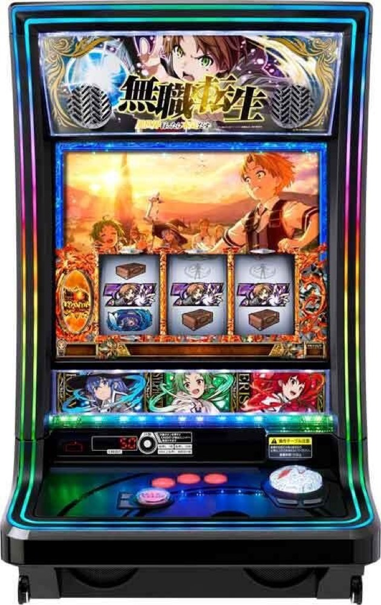

L 無職転生 ～異世界行ったら本気だす～
3人の無職CHANCEから4種類のBONUSへ。ヒロインVを重ね、転生の回廊とオルステッドを目指す。
- 導入
- 2025年12月
- メーカー
- ニューギン
- 分類
- パチスロ
主要スペック
ロキシー・シルフィエット・エリスの無職CHANCE、4種類の初当りBONUS、30GセットのAT、ヒロインV、バケーションゾーン、ターニングポイント2、七大列強龍神オルステッド、純増約4.5枚/Gの上位ATまでを専用画面で体験できます。
- 無職CHANCEは約50%・66%・50%
- ATは30G・平均5.7セット
- ターニングポイント2は5G・成功約56%
L 無職転生 ～異世界行ったら本気だす～の見どころと計算条件
ロキシー・シルフィエット・エリスの無職CHANCE、4種類の初当りBONUS、30GセットのAT、ヒロインV、バケーションゾーン、ターニングポイント2、七大列強龍神オルステッド、純増約4.5枚/Gの上位ATまでを専用画面で体験できます。
スマスロ 無職転生を数字で早分かり
無職CHANCEから異世界行ったら本気だす、異世界行ったら本気だす（上位AT）までの流れと、設定ごとの結果差を固定レートで比較できます。
30秒で分かるスマスロ 無職転生
CZでBONUSを取り、30Gセット中にヒロインVを集め、転生の回廊を継続。ターニングポイント2成功からオルステッドと上位ATを目指すVストック型ATです。
こんな遊び方に向いている
- CZとBONUSの種類をPUSHで開きたい
- ヒロインVを集めてセット継続を伸ばしたい
- 上位CZ失敗後もEPISODE BONUSから続く流れを体験したい
遊ぶ前に確認したいこと
- 通常ATは27G＋継続ジャッジ3G
- BONUSごとにAT期待度が異なる
- 未公表のV獲得率は体験用代表値
無職CHANCEから4種類のBONUSへ
無職CHANCEは10G＋α。ロキシーとエリスは成功期待度約50%、シルフィエットは約66%で、ヒロイン役成立時に対応・非対応で当選率が変わります。
成功後は無職転生BONUS約70枚・AT期待度約50%、魔術BONUS約50枚・約16%、AT濃厚のEPISODE BONUS、本気BONUS約50枚・上位期待度約56%のいずれかへ進みます。
ATは27G＋転生の回廊3G
AT『異世界行ったら本気だす』は1セット30G、純増約2.8枚/G、平均5.7セット。前半27GでヒロインVストックを狙い、最後の3G『転生の回廊』で継続を判定します。
ヒロインVを持っていれば消費して継続。ロキシー・シルフィエット・エリス・ダブル・ALLの種類を専用画面で表示します。
バケーションゾーンでVを強化
Vストック獲得時の一部から10G・20G・30Gのバケーションゾーンへ。約1/6.8のヒロイン役で、所持Vの強化または新しいヒロインV獲得を目指します。
専用進行では残りゲーム数を進めたあとPUSHし、獲得・昇格したVストックを表示してATへ戻します。
ターニングポイント2から上位ATへ
ターニングポイント2は5G・成功期待度約56%。成功すると10G＋αの七大列強龍神オルステッドを経由し、純増約4.5枚/Gの上位ATへ進みます。
失敗してもEPISODE BONUSを経由して通常ATへ復帰。25セット以上は上位CZ抽選、35セット以上は突入濃厚です。
固定条件と簡略化する範囲
- 約33G/50枚・1,000円46枚貸し・5.2枚交換で固定
- 設定1〜6のBONUS・AT初当り・出玉率を公開値で反映
- CZ・BONUS・AT・上位CZ・特化・上位ATを機種専用進行
- ヒロイン役の細かな成立順と内部状態は体験用代表値
- 19,000枚到達時はコンプリート表示
平均Gと投資目安の計算
掲載する異世界行ったら本気だす初当り約1/416は設定1基準です。当サイトでは50枚あたり33G、1,000円46枚貸しの固定条件から、設定1基準の平均投資目安を約13,700円と計算します。
シミュレーターでは設定1〜6を均等抽選します。設定1〜6で公開されている初当り値を個別に使います。公開されていない特化ゾーン・上位到達率の設定差は加えません。 換金は5.2枚交換で固定し、結果とランキングに設定を表示します。
シミュレーション結果の見方
当るまで無職CHANCE・異世界行ったら本気だすまでのゲーム数
設定設定1・2・3・4・5・6から抽選された今回の設定
上位到達ターニングポイント2と異世界行ったら本気だす（上位AT）への到達
最終収支差枚と5.2枚交換の収支目安
結果は自動で「マイ記録」に保存され、同じ機種を何回試したか、最高収支、勝率をあとから確認できます。
簡易シミュレーターについて
無職CHANCE・異世界行ったら本気だす・異世界行ったら本気だす（上位AT）の流れを固定条件で体験できます。JavaScriptを有効にすると、この位置にシミュレーター、演出、マイ記録、機種別ランキングが表示されます。
結果は娯楽・確率理解のための参考表示です。金銭的価値や交換価値はなく、実際の勝敗や収支を保証しません。18歳未満の方の利用はお控えください。
スマスロ 無職転生のよくある質問
スマスロ 無職転生はどんな台？
ロキシー・シルフィエット・エリスの無職CHANCE、4種類の初当りBONUS、30GセットのAT、ヒロインV、バケーションゾーン、ターニングポイント2、七大列強龍神オルステッド、純増約4.5枚/Gの上位ATまでを専用画面で体験できます。 無職CHANCEは約50%・66%・50%が主な確認ポイントです。
スマスロ 無職転生の平均投資目安は？
設定1基準の異世界行ったら本気だす初当り約1/416と、50枚あたり33G・46枚貸しの固定条件から、平均13,700円を目安として表示します。実際の設定や遊技状況で結果は変わります。
設定とゲームの流れはどう抽選する？
開始時に設定1・2・3・4・5・6から1つを均等抽選し、無職CHANCE、異世界行ったら本気だす、ターニングポイント2、異世界行ったら本気だす（上位AT）の順で到達を判定します。設定は最終結果とランキングに表示します。
収支はどう計算する？
1,000円46枚貸し・5.2枚交換の固定条件で投資、換金、収支目安を計算します。実店舗の再プレイ、持ちメダル、端数処理は含みません。